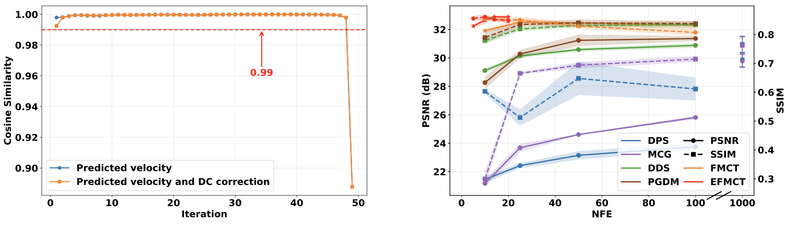
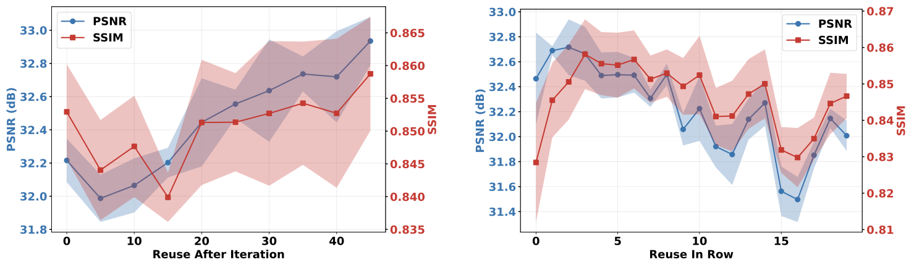

Generative models, particularly Diffusion Models (DM), have shown strong potential for Computed Tomography (CT) reconstruction serving as expressive priors for solving ill-posed inverse problems. However, diffusion-based reconstruction relies on Stochastic Differential Equations (SDEs) for forward diffusion and reverse denoising, where such stochasticity can interfere with repeated data consistency corrections in CT reconstruction. Since CT reconstruction is often time-critical in clinical and interventional scenarios, improving reconstruction efficiency is essential. In contrast, Flow Matching (FM) models sampling as a deterministic Ordinary Differential Equation (ODE), yielding smooth trajectories without stochastic noise injection. This deterministic formulation is naturally compatible with repeated data consistency operations. Furthermore, we observe that FM-predicted velocity fields exhibit strong correlations across adjacent steps. Motivated by this, we propose an FM-based CT reconstruction framework (FMCT) and an efficient variant (EFMCT) that reuses previously predicted velocity fields over consecutive steps to substantially reduce the number of Neural network Function Evaluations (NFEs), thereby improving inference efficiency. We provide theoretical analysis showing that the error introduced by velocity reuse is bounded when combined with data consistency operations. Extensive experiments demonstrate that FMCT/EFMCT achieve competitive reconstruction quality while significantly improving computational efficiency compared with diffusion-based methods. The codebase is open-sourced at github.com/EFMCT/EFMCT.

Left: cosine similarity of predicted velocity fields at consecutive iterations in FMCT, with and without data consistency correction, showing strong correlation across adjacent steps. Right: reconstruction performance vs. NFE for DM methods and FMCT/EFMCT, demonstrating that FMCT/EFMCT achieve competitive quality at substantially lower NFEs. DM methods here use the deterministic DDIM sampler for fairness; DPS/MCG results with the original 1000-step DDPM sampler are shown as isolated points. Results are averaged over the same randomly selected 21 reconstructions from the AAPM dataset across all iteration settings; shaded regions indicate standard deviation.
CT reconstruction recovers an object $\bm{x}\in\mathbb{R}^m$ from projections $\bm{y}=\bm{A}\bm{x}$, where $\bm{A}\in\mathbb{R}^{n\times m}$ is set by the acquisition geometry. In sparse-view CT, $n < m$, so the problem is underdetermined and ill-posed.
We use a conditional linear flow (Rectified Flow) trained on full-view CT images, so that $\bm{x}_t = (1-t)\bm{x}_0 + t\bm{x}_1$ with $\bm{x}_1\sim\mathcal{N}(\bm{0},\bm{I})$, and a network $\bm{v}_t^{\bm{\theta}}$ predicts the velocity. Given the pretrained model, each reconstruction step has three components.
1. Flow transport — an explicit Euler update along the learned velocity field:
2. Data consistency — extrapolate to the terminal sample and refine it against the measurement (we use conjugate gradient, but the framework accepts any DC scheme):
3. Correction — apply the measurement-aware direction to the transported state:
These steps repeat until $t=0$ to give the final reconstruction.
Because consecutive velocities are nearly identical, EFMCT computes $\bm{v}_t = \bm{v}_t^{\bm{\theta}}(\bm{x}_t)$ once and reuses it for up to $M$ consecutive steps:
Since $\bm{v}_t$ is reused without additional network evaluations, this directly reduces NFEs. To keep the sampler stable and data-faithful, an adaptive refinement check guards every reuse step:
where $\eta > 1$ is a relaxation factor, empirically set to $\eta = 1.05$. If the condition is violated, reuse is terminated and the velocity is recomputed by the network. This mechanism balances efficiency against reconstruction accuracy.
Proposition 1. Assume $\bm{v}$ is locally Lipschitz in both $\bm{x}$ and $t$, i.e. $\|\bm{v}_t(\bm{x}) - \bm{v}_t(\bm{x}')\| \leq L_x\|\bm{x}-\bm{x}'\|$ and $\|\bm{v}_t(\bm{x}) - \bm{v}_{t'}(\bm{x})\| \leq L_t|t-t'|$ for all relevant $\bm{x}, \bm{x}', t, t'$. Then, for a single reuse step, the local deviation between the reuse update $\tilde{\bm{x}}_{k+1}$ and the standard Euler update $\bm{x}_{k+1}$ satisfies $\|\tilde{\bm{x}}_{k+1} - \bm{x}_{k+1}\| = \mathcal{O}(\Delta t^2)$, i.e. velocity reuse introduces a local error of the same order as the Euler discretization itself. Moreover, if the same velocity is reused for at most $M$ consecutive steps (independent of $\Delta t$) and the data-consistency correction is non-expansive with respect to its image argument, then the deviation remains controlled: the accumulated deviation after one reuse block is $\mathcal{O}(M^2\Delta t)$.
The proposition implies that velocity reuse introduces a local error of the same order as the Euler discretization itself. When the reuse length is bounded, the accumulated error remains controlled over consecutive reuse steps. The full proof is given in the appendix of the paper.
We evaluate on two public datasets: the AAPM 2016 Low Dose CT Grand Challenge dataset (512×512, nine patients for training, patient L506 held out for testing) and the Medical Segmentation Decathlon CT dataset (Task_06 Lung, 512×512, ten patients for training, patient 017 for testing). Sparse-view measurements with 20 and 40 views are simulated with the ASTRA Toolbox under a parallel-beam geometry. Baselines are FBP, ADMM-TV, and four representative diffusion solvers: DPS, MCG, PGDM, and DDS.
| Dataset | Method | 40 views | 20 views | NFE* | Time / s | ||||||
|---|---|---|---|---|---|---|---|---|---|---|---|
| PSNR ↑ | SSIM ↑ | Data Fit ↓ | LPIPS ↓ | PSNR ↑ | SSIM ↑ | Data Fit ↓ | LPIPS ↓ | ||||
| AAPM | FBP | 26.98±0.45 | 0.691±0.027 | 2783.64±233.30 | 0.391±0.014 | 24.01±0.49 | 0.547±0.029 | 1798.77±171.00 | 0.554±0.021 | – | 0.02 |
| ADMM-TV | 31.94±0.42 | 0.836±0.027 | 22.11±2.29 | 0.272±0.027 | 29.45±0.46 | 0.798±0.029 | 17.53±2.00 | 0.380±0.028 | – | 9.85 | |
| DPS | 30.05±0.69 | 0.795±0.033 | 261.35±20.58 | 0.128±0.018 | 28.78±0.81 | 0.764±0.032 | 142.93±35.99 | 0.166±0.025 | 1000 | 142.16 | |
| MCG | 30.00±0.79 | 0.791±0.032 | 198.07±14.20 | 0.145±0.017 | 27.57±0.42 | 0.736±0.031 | 180.83±11.87 | 0.208±0.028 | 1000 | 143.44 | |
| PGDM | 30.26±0.61 | 0.803±0.030 | 208.98±13.72 | 0.159±0.022 | 29.43±0.60 | 0.775±0.031 | 106.51±5.30 | 0.187±0.025 | 100 | 29.79 | |
| DDS | 31.06±0.40 | 0.834±0.030 | 19.09±1.14 | 0.114±0.013 | 29.21±0.36 | 0.785±0.031 | 9.87±0.61 | 0.181±0.021 | 50 | 3.83 | |
| FMCT (ours) | 31.63±0.39 | 0.810±0.031 | 60.57±18.52 | 0.101±0.010 | 29.98±0.23 | 0.769±0.030 | 46.46±14.86 | 0.148±0.015 | 25 ↓50% | 1.92 ↓50% | |
| EFMCT (ours) | 31.52±0.28 | 0.832±0.027 | 182.80±104.39 | 0.129±0.014 | 29.52±0.23 | 0.795±0.027 | 111.41±79.80 | 0.194±0.021 | 7 ↓75% | 0.83 ↓78% | |
| Decathlon | FBP | 28.01±0.76 | 0.763±0.037 | 2772.79±434.36 | 0.348±0.018 | 24.85±0.96 | 0.618±0.039 | 1731.97±305.77 | 0.512±0.026 | – | 0.02 |
| ADMM-TV | 34.40±1.23 | 0.900±0.021 | 15.73±0.55 | 0.195±0.025 | 30.26±1.03 | 0.851±0.028 | 14.76±0.50 | 0.319±0.021 | – | 9.85 | |
| DPS | 33.85±1.25 | 0.870±0.018 | 250.11±18.61 | 0.128±0.037 | 31.69±1.44 | 0.842±0.025 | 121.25±18.57 | 0.140±0.038 | 1000 | 142.16 | |
| MCG | 30.03±1.20 | 0.824±0.030 | 301.17±35.25 | 0.164±0.034 | 28.67±1.26 | 0.798±0.038 | 198.22±22.68 | 0.186±0.026 | 1000 | 143.44 | |
| PGDM | 34.78±1.23 | 0.899±0.014 | 147.10±15.20 | 0.100±0.129 | 31.82±1.19 | 0.860±0.018 | 132.96±13.69 | 0.124±0.032 | 100 | 29.79 | |
| DDS | 37.66±1.20 | 0.923±0.009 | 15.10±9.29 | 0.072±0.015 | 33.00±1.29 | 0.873±0.018 | 5.01±0.36 | 0.110±0.017 | 100 | 7.65 | |
| FMCT (ours) | 37.65±1.53 | 0.912±0.020 | 334.44±74.21 | 0.109±0.021 | 33.41±1.57 | 0.841±0.036 | 294.97±58.87 | 0.180±0.026 | 50 ↓50% | 4.09 ↓47% | |
| EFMCT (ours) | 37.56±1.37 | 0.940±0.014 | 621.99±48.99 | 0.070±0.011 | 33.21±1.29 | 0.888±0.024 | 470.58±33.62 | 0.120±0.024 | 11 ↓89% | 1.72 ↓78% | |
Mean and standard deviation are reported for PSNR, SSIM, data fidelity, and LPIPS (lower is better — LPIPS measures perceptual similarity to the reference). The best average result for each metric is shown in bold, and the second best is underlined. NFE* counts only neural network forward evaluations. The percentages indicate the efficiency improvement in NFE and computation time (on an RTX 4090) of FMCT/EFMCT compared with the most efficient diffusion-based method. PSNR, SSIM and data fidelity are from Table 1 of the paper; LPIPS is from Table 2 in the appendix.
FMCT/EFMCT are often among the highest PSNR and SSIM across datasets and view configurations while requiring substantially fewer NFEs and lower computation time than diffusion-based baselines. ADMM-TV and DDS achieve the best and second-best data fidelity, reflecting their strong emphasis on measurement consistency. Compared with FMCT, EFMCT shows a slight reduction in PSNR and data fidelity but comparable or improved SSIM — with a significant efficiency improvement, down to 7 NFEs and 0.83 s per slice on AAPM. Perceptually, FMCT attains the best LPIPS on AAPM at both view counts, and EFMCT the best LPIPS on Decathlon at 40 views.
Visual comparison of reconstructions across different methods, datasets, and views. PSNR, SSIM, and reconstruction time are shown in the lower-left, lower-right, and upper-right corners of each image, respectively. We visualize only the best three diffusion-based methods for better visibility. Zoom in for more details (full-resolution PDF).

Ablation of the velocity reuse strategy. Left: reuse enabled after different iteration indices. Right: varying the maximum number of consecutive reuse steps. Shaded regions indicate standard deviation.
Both ablations use 21 randomly selected test CT images with the total number of sampling iterations fixed to 50.
For all EFMCT results we adopt a reuse strategy that enables velocity reuse after the first iteration and allows up to 10 consecutive reuse steps.
We proposed FMCT/EFMCT, representing the first application of flow matching to CT reconstruction. By exploiting the deterministic transport structure of flow matching, we introduced a velocity reuse strategy that substantially reduces NFEs. We provided theoretical analysis showing that the error introduced by velocity reuse is of the same order as Euler discretization and remains bounded when combined with explicit data consistency operations. Extensive experiments on multiple datasets demonstrate that FMCT/EFMCT achieve competitive reconstruction quality while significantly improving computational efficiency compared with diffusion-based methods. We believe the proposed framework offers a practical and principled approach toward efficient generative CT reconstruction, with the potential to facilitate the deployment of advanced reconstruction methodologies in real-world clinical settings.
The full codebase — training, reconstruction, and pretrained flow matching models for both datasets — is available at github.com/EFMCT/EFMCT. FMCT and EFMCT share a single reconstruction script; the two are selected purely by their sampling parameters:
| Setting | num_inference_steps | skip_after | max_skips_in_a_row | eta ($\eta$) |
|---|---|---|---|---|
| FMCT (no velocity reuse) | 50 | 50 | any | any |
| EFMCT (velocity reuse) | 50 | 0 | 10 | 1.05 |
For the diffusion-based comparison methods, please refer to the DM4CT benchmark repository.
The authors are supported by European Union H2020-MSCA-ITN-2020 under grant agreement no. 956172 and the Dutch Research Council under grant no. ENWSS.2018.003 and no. NWA.1160.18.316.
Disclosure of Interests. The authors have no competing interests to declare that are relevant to the content of this article.
@article{shi2026efficient,
title={Efficient Flow Matching for Sparse-View {CT} Reconstruction},
author={Shi, Jiayang and Yang, Lincen and Li, Zhong and van Leeuwen, Tristan
and Pelt, Dani{\"e}l M. and Batenburg, K. Joost},
journal={arXiv preprint arXiv:2603.00205},
year={2026}
}